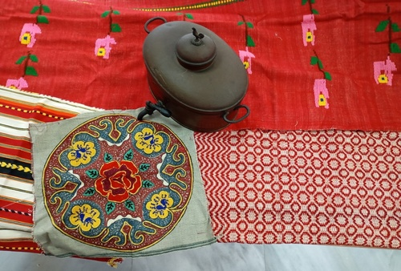

Exhibition of Traditional Textiles — Heraklion
Date: 15 November 2025
Starting time: 18:30
Location: Heraklion Cultural Centre, “Andreas Papandreou” Hall
The exhibition presents more than 80 authentic textiles from various regions of Crete, including rare 19th‑century pieces, monastic creations and textiles that are still being woven on traditional looms today. Visitors will see traditional costumes, kilims and throws, as well as working looms that highlight the deep roots of weaving on the island.
The exhibition is accompanied by photos and video from local weavers, showcasing the technique, rhythm and detail of the weaving process.
Admission: Free
⬅ Back to Home